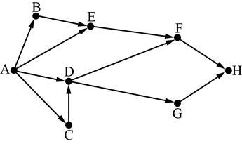

Вариант 8
Задание 1. В кодировке КОИ-8 каждый символ кодируется 8 битами. Ученица написала текст (в нём нет лишних пробелов):
«Предметы мебели: пуф, стул, диван, кресло, кровать, тумбочка, оттоманка, полукресло, раскладушка».
Ученица удалила из списка название одного предмета, а также лишние запятую и пробел – два пробела не должны идти подряд.
При этом размер нового предложения в данной кодировке оказался на 11 байт меньше, чем размер исходного предложения. Напишите в ответе удалённое название предмета.
Задание 2. Ваня шифрует русские слова, записывая вместо каждой буквы её номер в алфавите (без пробелов). Номера букв даны в таблице.
|
А 1 |
Й 11 |
У 21 |
Э 31 |
|
Б 2 |
К 12 |
Ф 22 |
Ю 32 |
|
В 3 |
Л 13 |
Х 23 |
Я 33 |
|
Г 4 |
М 14 |
Ц 24 |
|
|
Д 5 |
Н 15 |
Ч 25 |
|
|
Е 6 |
О 16 |
Ш 26 |
|
|
Ё 7 |
П 17 |
Щ 27 |
|
|
Ж 8 |
Р 18 |
Ъ 28 |
|
|
З 9 |
С 19 |
Ы 29 |
|
|
И 10 |
Т 20 |
Ь 30 |
|
Некоторые шифровки можно расшифровать не одним способами. Например, 311333 может означать «ВАЛЯ», может – «ЭЛЯ», а может – «ВААВВВ».
Даны четыре шифровки:
9828210
5103115
1213131
3102030
Только одна из них расшифровывается единственным способом. Найдите её и расшифруйте. Получившееся слово запишите в качестве ответа.
Задание 3. Напишите натуральное число x, для которого ложно высказывание:
НЕ (x < 6) ИЛИ (x < 5).
Задание 4. Между населёнными пунктами A, B, C, D, E построены дороги, протяжённость которых приведена в таблице.
| A | B | C | D | E | |
| A | 2 | 3 | |||
| B | 2 | 1 | 3 | 5 | |
| C | 3 | 1 | 4 | 3 | |
| D | 3 | 4 | 1 | ||
| E | 5 | 3 | 1 |
Определите длину кратчайшего пути между пунктами A и E, проходящего через пункт Е. Передвигаться можно только по дорогам, указанным в таблице. Каждый пункт можно посетить только один раз.
Задание 5.
У исполнителя Вычислитель две команды, которым присвоены номера:
1. умножь на 5
2. прибавь 1
Первая из них увеличивает число на экране в 5 раз, вторая увеличивает его на 1.
Составьте алгоритм получения из числа 1 числа 56, содержащий не более 5 команд.
В ответе запишите только номера команд.
Задание 6. Ниже приведена программа, записанная на пяти языках программирования.
| Бейсик | Python |
|
DIM k, s AS INTEGER INPUT s INPUT k IF NOT (s < -5 AND t >= 3) THEN PRINT "YES" ELSE PRINT "NO" END IF |
s = int(input()) k = int(input()) if not ((s < -4) and (t >= 3)): print("YES") else: print("NO") |
| Паскаль | Алгоритмический язык |
|
var s, k: integer; begin readln(s); readln(k); if not((s < -4) and (t >=3 )) then writeln ('YES') else writeln ('NO') end. |
алг нач цел s, k ввод s ввод k если не (s < -4 и t >= 3) то вывод "YES" иначе вывод "NO" все кон |
| С++ | |
| #include using namespace std; int main() { int s, k; cin >> s; cin >> k; if !((s < -4) && (t >= 3)) cout << "YES" ; else cout << "NO" ; return 0; } |
|
Было проведено 9 запусков программы, при которых в качестве значений переменных s и k вводились следующие пары чисел:
(–5, –2); (5, 3); (–14, 3); (–12, 5), (5, –7); (10, 3); (–4, 3); (3, 0); (–4, 9).
Сколько было запусков, при которых программа напечатала «NO»?
Задание 7.
Доступ к файлу game.doc, находящемуся на сервере doc.ru, осуществляется по протоколу http.
Фрагменты адреса файла закодированы цифрами от 1 до 7. Запишите последовательность этих цифр, кодирующую адрес указанного файла в сети Интернет.
1) //
2) /
3) http:
4) ru
5) doc.
6) game
7) .doc
Задание 8.
В языке запросов поискового сервера для обозначения логической операции «ИЛИ» используется символ «|», а для логической операции «И» – символ «&».
В таблице приведены запросы и количество найденных по ним страниц некоторого сегмента сети Интернет.
| Запрос | Найдено страниц (в сотнях тысяч) |
| Стихотворение | 113 |
| Пушкин | 83 |
| Лесков | 70 |
| Стихотворение | Пушкин | Лесков | 211 |
| Стихотворение & Пушкин | 22 |
| Стихотворение & Лесков | 0 |
Какое количество страниц (в тысячах) будет найдено по запросу Пушкин & Лесков?
Считается, что все запросы выполнялись практически одновременно, так что набор страниц, содержащих все искомые слова, не изменялся за время выполнения запросов.
Задание 9.
На рисунке – схема дорог, связывающих города A, B, C, D, E, F, G, H.
По каждой дороге можно двигаться только в одном направлении, указанном стрелкой. Сколько существует различных путей из города А в город H?

Задание 10.
Переведите число 245 из десятичной системы счисления в двоичную систему счисления. Сколько единиц содержит полученное число? В ответе укажите одно число – количество единиц.
Задание 11.
В одном из произведений А.П. Чехова, текст которого приведён в подкаталоге каталога Проза, есть герой по фамилии Родэ.
С помощью поисковых средств операционной системы и текстового редактора или браузера выясните чин (звание) Родэ.
Задание 12.
Сколько файлов объёмом более 5 Кб каждый содержится в подкаталогах каталога DEMO-12? В ответе укажите только число.